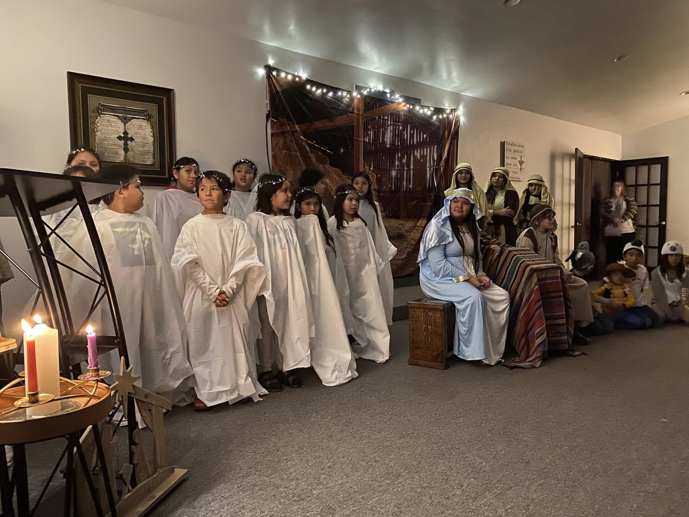

The Creator's House of Prayer.
All Tribes Baptist Church is a family of believers gathered around Jesus Christ — keeping the old paths of prayer, honoring the gifts the Creator has placed in every nation and tribe, and walking together in the gospel.
"My house shall be called a house of prayer for all nations." Mark 11:17 · Isaiah 56:7

Come as you are. You are family here.
We are Native and non-Native together — believers from many tribes and many places, gathered around one Jesus, one gospel, one Creator.
We sing. We pray. We share the Word and a meal. We bring the children. We sit with the elders. We make room for the stranger, because once we were strangers too — and Christ made room for us.
If you've been hurt by a church, or never been to one, or wondered if there was a place where the gospel of Jesus and the gifts of your people could sit at the same table — come and see. The door is open. The kettle is on.
What we hold to.
Four commitments shape this church — like the four directions hold the circle. They are how we worship, how we live, and how we walk together in the way of Jesus.
The Word, faithfully kept
Verse-by-verse preaching of the Bible — the old, old story told plain. We trust Scripture to do its quiet work across a lifetime.
Prayer, without ceasing
We are a house of prayer. For families, for the sick, for the lost, for our communities. The prayer bowl is always passed.
Family of every tribe
Native and non-Native, young and old, neighbor and newcomer — we belong to each other because we belong to Christ.
Honor the elders, raise the children
Our elders are heard. Our children are taught the gospel and the stories of our peoples. The generations carry each other.
When we meet.
The doors open early and the coffee is on. Children are welcome in every service — they are not a distraction, they are the church. All are welcome at the table.

A small house, an open door.
We meet in a humble building on the corner — coral walls, a hand-painted sign, the cross and the feathers out front. There's parking on the side and the doors are usually unlocked before service.
A gift, multiplied.
Every gift to All Tribes supports the ministry of this church — our weekly worship, the children's program, the family meal, the prayer ministry, and the work we do alongside our neighbors. Thank you for your partnership in the gospel.
"Each one must give as he has decided in his heart, not reluctantly or under compulsion, for God loves a cheerful giver." 2 Corinthians 9:7
- Sunday worship The weekly gathering — singing, Scripture, prayer, the Lord's Supper.
- Children & youth Sunday school, youth night, summer activities for our young people.
- The family meal Food on the table for whoever walks through the door.
- Caring for our own Coming alongside families in need of practical help and prayer.